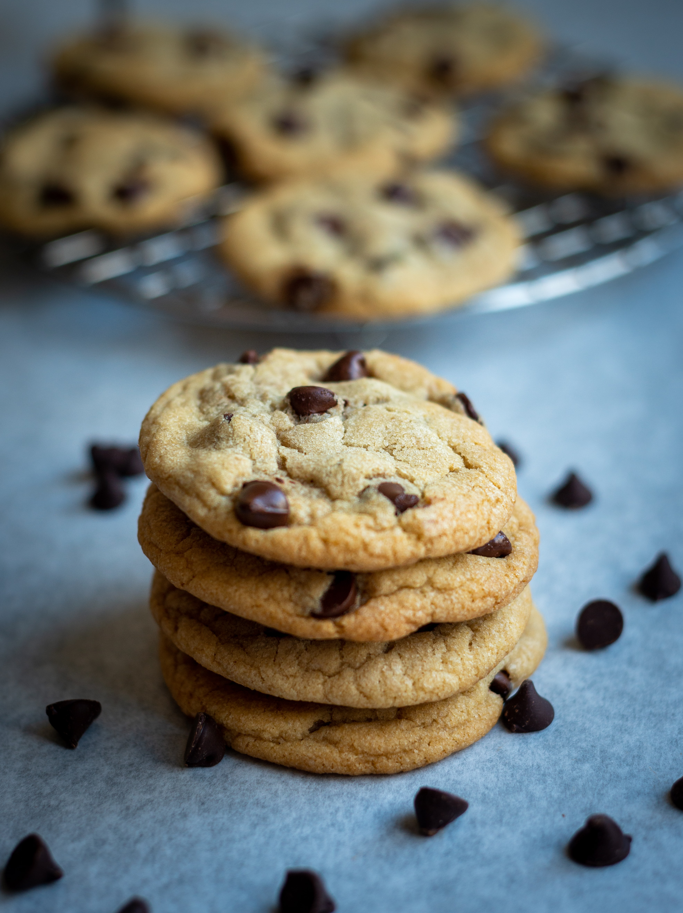

Chocolate Chip Cookies

A Tradition of Homemade Goodness
My family has been baking these cookies since before I was born--ever since it was published
in a book by their favorite bakery, an unassuming little place tucked between the Santa Cruz
Mountains and the Pacific Ocean.
The recipe has changed somewhat over the years with my ever-resourceful and [occasionally ridiculous]
mother adding this or that, sometimes scribbling annotations, only to scrub them away a few weeks later.
What remains today is the culmination of all her tricks: a recipe transformed by a woman who
never did things by the book, and me, the kid she taught to follow directions to a "t."
From my family to yours, I hope you enjoy!
Ingredients
- 1 cup (8 ounces)) unsalted butter (softened)
- 3/4 cup granulated sugar
- 1 1/4 packed light brown sugar
- 2 large eggs
- 3/4 tsp vanilla extract
- 3 1/2 unbleached white flour
- 1 1/4 baking powder
- 2 baking soda
- 1 tsp salt
- 2 cups semisweet chocolate chips
Steps
- Preheat oven to 350 degrees F.
- Cream butter and sugars until combined.
- Beat in eggs, one at a time, then beat in vanilla extract until fluffy.
- in a seperate bowl, combine the flour, baking powder, baking soda and salt.
- Add dry ingredients to wet mixture and mix on low until barely incorperated.
- Stir in chocolate chips. (Don't overmix!)
- Using a cookie scoop or two tablespoons, roll dough into balls and place them
evenly spaced on prepared cookie sheet.
- Bake in preheated oven for approximately 8-10 minutes, or until just barely browned.
- Allow a few minutes for cookies to set before moving them to a cooling rack.
- Enjoy!